Viajar con tranquilidad
Reassuring Travel → "Viaje con tranquilidad"
Viaje con tranquilidad
Qué hacer después de un accidente de tránsito
- Saque el triángulo de advertencia del baúl y colóquelo en una posición adecuada detrás del vehículo.
Introducción
Si su vehículo presenta alguno de los siguientes problemas, comuníquese con el Centro de Servicio de Xpeng Motors:
Cuando un vehículo sufre daños graves en un accidente, preste atención a las siguientes advertencias para garantizar la seguridad personal:
• El vehículo se ve involucrado en accidentes como colisión, daño por agua o roce de los bajos.
• Nunca toque el mazo de cables de alta tensión ni ninguno de los componentes de alta tensión del vehículo.
• El tablero muestra una alarma de falla grave (como falla de la batería de potencia, sobrecalentamiento de la batería de potencia, sobrecalentamiento del motor y del controlador, falla del sistema eléctrico, temperatura demasiado alta del puerto de carga, etc.). Consulte la página 20.
• No entre en contacto con líquido que esté goteando.
• Nunca intente inspeccionar el vehículo usted mismo.
• Si es necesario remolcar el vehículo, comuníquese con el Centro de Servicio de Xpeng Motors.
Cuando el vehículo se avería u ocurre un accidente, para llamar la atención del vehículo que circula detrás, utilice el dispositivo de emergencia. Consulte la página 334 y siga los pasos a continuación:
• Si el vehículo ha estado sumergido en agua, no lo vuelva a energizar, ya que esto puede provocar un cortocircuito dentro de la batería de potencia. Para garantizar la seguridad personal y evitar daños secundarios al vehículo, comuníquese de inmediato con un Centro de Servicio de Xpeng Motors para que inspeccione el sistema de la batería de potencia y un profesional evalúe los daños.
1. Detenga el vehículo en un lugar seguro y encienda las luces de advertencia de emergencia.
- Saque del baúl y póngase su chaleco de seguridad.
Viaje con tranquilidad
• Si el vehículo comienza a emitir humo, aléjese del vehículo de inmediato y comuníquese con el Centro de Servicio de Xpeng Motors a la brevedad.
Pautas de seguridad para el uso de los sistemas de asistencia a la conducción
Limitaciones del radar y la cámara
• Si el vehículo se incendia, aléjese del vehículo de inmediato y llame a la policía a tiempo. Al llamar a la policía, debe informar que el vehículo es un vehículo eléctrico puro de nueva energía.
Consejos
Asegúrese de que las superficies del radar y la cámara estén limpias y despejadas antes de usar la función de asistencia a la conducción cada vez.
• Si el tablero muestra una falla del sistema de la batería de potencia, debe detenerse de forma segura, alejarse del vehículo y comunicarse con el Centro de Servicio de Xpeng Motors para su atención.
Las siguientes condiciones pueden hacer que el radar o la cámara no reconozcan el objetivo, lo reconozcan con retraso o lo identifiquen de forma incorrecta:
advertencia
• Si alguien en el vehículo resulta herido, debe comunicarse con los servicios de emergencia según la gravedad de la lesión.
• El radar o la cámara está obstruido o sucio, por ejemplo, por nieve, escarcha, lluvia, objetos extraños como agua, suciedad, etc. adheridos.
• Si el vehículo se ve involucrado en un accidente como un raspón o una colisión, la estructura interna de la batería de potencia puede dañarse, lo que representa un grave peligro para la seguridad. Debe contactar de inmediato al Centro de Servicio de Xpeng Motors para inspeccionar el sistema de la batería de potencia y que un profesional evalúe el daño.
• Radar, cámara o componente asociado defectuoso.
• Baches en el camino u otras causas que hacen que el vehículo se balancee.
• Clima severo, como lluvia, nieve, niebla, etc.
Viaje Tranquilo
• Hay interferencia de fuentes acústicas de la misma frecuencia alrededor del vehículo.
• Entornos oscuros como la noche, el amanecer, el atardecer, túneles, etc.
• Objetos en las cercanías del vehículo que pueden hacer que el sonido se refleje de forma incorrecta.
advertencia
• El objetivo detectado por el radar está cubierto de sustancias que absorben las ondas sonoras, como copos de nieve, espumas, objetos de algodón, etc.
Los siguientes objetivos de radar/cámaras no se reconocen:
• Vehículos especiales, como vehículos con la parte trasera cubierta, vehículos dañados o vehículos de forma irregular.
• El objeto detectado es demasiado pequeño.
• En casos excepcionales poco frecuentes, pueden producirse falsas alarmas en algunas barreras metálicas, franjas verdes, muros de cemento, etc.
• Cuando se encuentre con animales, semáforos, muros y otros obstáculos desconocidos en su trayecto.
• Algunas barreras metálicas, franjas verdes, muros de cemento, etc.
• Cuando cambia el brillo ambiental, como al entrar o salir de un túnel.
• Instalaciones de prueba de carretera, conos, amortiguadores de impacto, trípodes, placas pequeñas de construcción, etc.
• Grandes sombras proyectadas por edificios, paisajes o vehículos grandes.
• El vehículo ha chocado y la posición de montaje del radar o la cámara ha cambiado.
• Obstáculos estáticos, como conos de tránsito, tambores, columnas de tránsito, triángulo de advertencia u otro bloqueo de carretera).
• Luz intensa, como faros de vehículos que se aproximan o luz solar directa.
• Objetos estáticos, como una barredora lenta o detenida, un camión de accidente volcado, piedras grandes,
Viaje Tranquilo
Trípodes, franjas de separación, peatones cruzando la calle, etc.
• Integridad del registro de datos del evento.
• Intervalo de tiempo entre este evento y el evento anterior.
Registrador de Datos de Eventos (EDR)
Introducción
• Número de hardware de la ECU para registrar los datos del EDR.
• Número de serie de la ECU para registrar los datos del EDR.
El vehículo está equipado con un registrador de datos de eventos (EDR).
• Número de software de la ECU para registrar los datos del EDR.
• Aceleración lateral.
El EDR puede registrar automáticamente la información del funcionamiento del vehículo y del estado del sistema de seguridad del vehículo dentro de un período de tiempo antes y después de la ocurrencia de eventos del vehículo, tales como:
• Velocidad de guiñada.
• Ángulo de dirección.
• Marcha.
• Velocidad del vehículo.
• Posición del pedal de freno.
• Estado del sistema de estacionamiento.
• Estado del pedal de freno.
• Tiempo de despliegue del airbag.
• Aceleración longitudinal.
• Estado del cinturón de seguridad del conductor.
• Tiempo de despliegue del pretensor del cinturón de seguridad.
• Estado del cinturón de seguridad del pasajero delantero.
• Posición del pedal del acelerador, porcentaje de la posición de apertura total.
• Estado de alarma del sistema de protección de ocupantes.
• Estado de alarma del sistema de monitoreo de presión de neumáticos.
• Período de encendido durante el evento.
• Estado de alarma del sistema de frenos.
• Período de encendido al momento de la lectura.
• Estado del sistema de control de crucero.
Viaje con Tranquilidad
• Estado del sistema antibloqueo de frenos.
• Estado del sistema AEB.
• es necesario cumplir con los requisitos de las autoridades administrativas y judiciales.
• Estado del sistema ESC.
• es necesario observar las leyes y los reglamentos.
• Estado del sistema de control de tracción.
• Período de sincronización temporal previo al evento.
Cinturón de seguridad
Mediante la recopilación y el análisis de los datos del estado del vehículo registrados por el EDR, es útil para comprender la situación relevante antes y después del evento.
Importancia de Usar el Cinturón de Seguridad
Los cinturones de seguridad sirven para sujetar al conductor y a los pasajeros en posiciones determinadas y prevenir una colisión.
Los datos registrados por el EDR deben extraerse conectando un equipo de diagnóstico especial al puerto OBD del vehículo. Si es necesario, comuníquese con el Centro de Servicio de XPENG para obtener el equipo.
En caso de colisión, usar correctamente los cinturones de seguridad puede ayudar a otros sistemas de seguridad a absorber la energía generada por el impacto, reducir la inercia del movimiento hacia adelante del conductor y los pasajeros, permitirles obtener la mejor protección del SRS y minimizar las lesiones causadas por el impacto.
Declaración sobre el uso de los datos
XPENG puede utilizar los datos registrados por el EDR para diagnóstico de fallas, investigación y desarrollo de productos y mejora de la calidad. XPENG no divulgará los datos registrados por el EDR a un tercero, salvo que:
advertencia
En caso de accidente, depender únicamente de una bolsa de aire es peligroso. Sin la protección del cinturón de seguridad, al golpear directamente la bolsa de aire que se infla explosivamente,
• lo acuerde el propietario.
Viaje con Tranquilidad
el movimiento inmediato hacia adelante del cuerpo y la rápida expansión de la bolsa de aire causarán daños más graves en la cabeza y el pecho.
Uso Correcto del Cinturón de Seguridad
Que la postura sentada del conductor sea correcta afecta directamente el grado de fatiga y la seguridad de conducción del conductor.
Postura de conducción correcta
advertencia
Los ocupantes deben usar los cinturones de seguridad correctamente; de lo contrario, los ocupantes no solo se perjudicarán a sí mismos sino que también pondrán en peligro a los demás ocupantes del vehículo cuando ocurra un accidente.
Para reducir el riesgo de víctimas en accidentes, los conductores deben hacer lo siguiente:
1. Siéntese erguido con ambos pies en el piso.
- Asegúrese de que sus pies puedan pisar fácilmente los pedales. Flexione ligeramente los brazos al sujetar el volante y mantenga el pecho a una distancia de al menos 25 cm del centro del volante.
Es responsabilidad del conductor asegurarse de que todos los ocupantes tengan el cinturón correctamente abrochado, desactivando con cuidado el recordatorio de cinturón de seguridad trasero sin abrochar cuando lo indique la pantalla de control central.
advertencia
- La sección central del cinturón de seguridad debe colocarse entre el cuello y los hombros, y la sección del regazo del cinturón de seguridad debe quedar ajustada alrededor de la articulación de la cadera (no del abdomen).
En caso de una colisión frontal o lateral grave, el pretensor funcionará simultáneamente
Pretensor del cinturón de seguridad
Viaje tranquilo
con el airbag. El pretensor tensa automáticamente el cinturón de seguridad, reduciendo la holgura en las partes abdominal y diagonal del cinturón, disminuyendo así la inclinación del conductor hacia adelante.
reemplazarse si es necesario. Una vez activado, el pretensor del cinturón de seguridad debe reemplazarse.
Revise el cinturón de seguridad
Cada cinturón de seguridad debe someterse a las siguientes cuatro inspecciones simples para confirmar que funciona correctamente:
1. Verifique si el cinturón de seguridad, la hebilla y otros dispositivos están dañados, modificados, descoloridos, manchados o muy sucios.
- Abroche el cinturón de seguridad y tire rápidamente del cinturón en una posición lo más cercana posible a la hebilla. En ese momento la hebilla debe quedar bloqueada de forma segura.
Si el pretensor y el airbag no se activan durante una colisión, no significa que tengan una falla. Generalmente significa que la intensidad o el tipo de colisión es insuficiente para activarlos.
-
Desabroche el cinturón de seguridad y retraiga el cinturón hasta el máximo. Verifique si el cinturón extraído tiene holgura excesiva y compruebe su estado de desgaste.
-
Extraiga parcialmente el cinturón de seguridad, sujete la lengüeta de bloqueo y tire de ella rápidamente hacia adelante. Entonces los cinturones de seguridad se bloquearán automáticamente
Después de un accidente, los airbags y otros componentes relacionados deben inspeccionarse y
advertencia
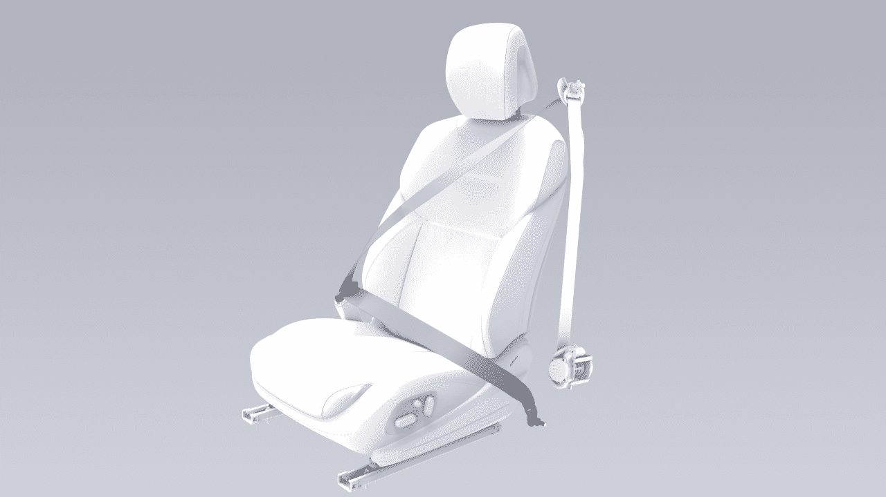
Viaje tranquilo
mediante el mecanismo de bloqueo interno para evitar el desenrollado excesivo de los cinturones de seguridad.
- Tire del cinturón de seguridad con fuerza para verificar si la guía está bloqueada de forma segura.
Si algún cinturón de seguridad no pasa alguna de las pruebas anteriores, comuníquese de inmediato con el Centro de Servicio XPENG.
advertencia
No ajuste la altura del cinturón de seguridad mientras el vehículo esté en movimiento.
Ajuste la altura del cinturón de seguridad delantero
Abrochar el cinturón de seguridad
1. Pellizque la guía en la dirección de la flecha y muévala hacia arriba y hacia abajo para ajustar el cinturón del hombro a una altura adecuada.
1. Extraiga los cinturones de seguridad lentamente, haga que los cinturones rodeen de manera uniforme toda la pelvis, el pecho y la clavícula para mantenerlos entre el cuello y el hombro.
- Suelte la guía del cinturón del hombro.
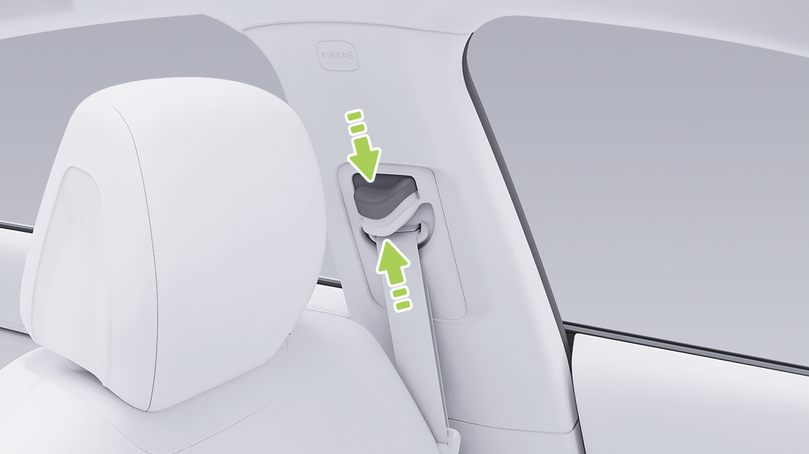
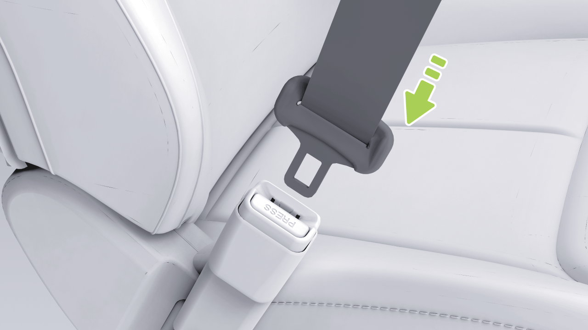
Viaje tranquilo
-
Inserte la lengüeta de bloqueo del cinturón de seguridad en las hebillas del cinturón hasta que haga “clic” para asegurar que la lengüeta de bloqueo quede fijada en su lugar.
-
Continúe sujetando la lengüeta de bloqueo del cinturón de seguridad y asegúrese de que el cinturón se retraiga lentamente.
-
Tire de los cinturones de seguridad con fuerza para comprobar si están abrochados.
-
Tense los cinturones de seguridad hacia el carrete para eliminar cualquier holgura inesperada.
Las lesiones a la futura madre y a su feto en caso de una colisión o frenado repentino pueden reducirse eficazmente con el uso adecuado de los cinturones de seguridad.
Uso del cinturón de seguridad por la futura madre
Desabrochar el cinturón de seguridad
1. Sujete la lengüeta de bloqueo del cinturón de seguridad.
- Presione el botón de desbloqueo en la hebilla del cinturón de seguridad.
The hip/shoulder type seat belt should be worn correctly... let me translate.
El cinturón de seguridad de tipo cadera/hombro debe ser usado correctamente por la mujer embarazada. El cinturón del hombro debe pasar por el pecho desde una
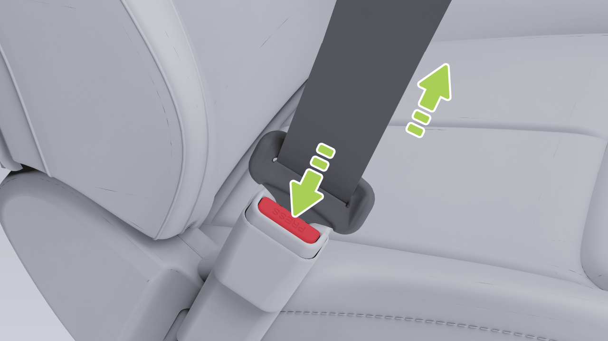
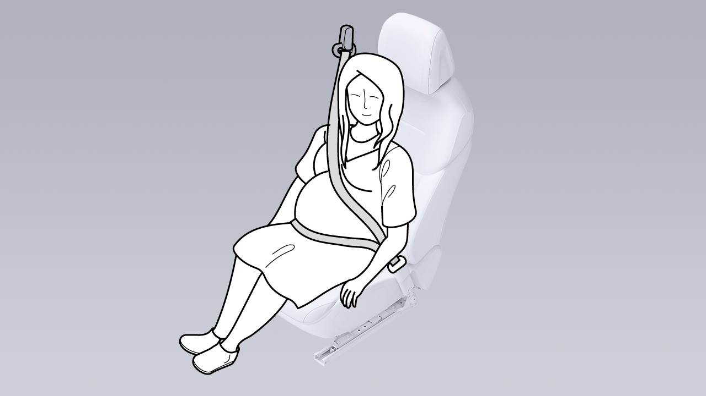
Viaje Tranquilo
posición adecuada, y el cinturón de la cadera debe pasar por la entrepierna lo más bajo posible y ajustarse debajo del abdomen elevado. El cinturón de seguridad debe quedar plano para no comprimir la parte inferior del cuerpo de la mujer embarazada.
Si el pasajero delantero no se abrocha el cinturón de seguridad, el indicador del cinturón de seguridad en el tablero parpadeará durante varios segundos antes de quedar encendido de forma fija cuando el vehículo está detenido. Si el vehículo está en movimiento y alcanza cierta velocidad, el indicador del cinturón de seguridad se encenderá, aparecerá un mensaje de advertencia y sonará una alarma.
Consulte a un médico para obtener mejores recomendaciones.
Uso del cinturón de seguridad por personas con discapacidad
Si un pasajero del asiento trasero no se abrocha el cinturón de seguridad, el indicador correspondiente del cinturón de seguridad en el tablero parpadeará durante varios segundos y luego permanecerá encendido.
El cinturón de seguridad también debe ser usado correctamente por las personas con discapacidad.
Consulte a un médico para obtener mejores recomendaciones.
Indicador del cinturón de seguridad
Si todos los ocupantes se han abrochado los cinturones de seguridad y el indicador sigue encendido, vuelva a abrochar todos los cinturones de seguridad para asegurarse de que estén correctamente bloqueados.
1. Indicador de cinturón de seguridad del conductor sin abrochar
2. Indicador de cinturón de seguridad del pasajero delantero sin abrochar
3. Indicador de cinturón de seguridad trasero izquierdo sin abrochar
Limpieza del Cinturón de Seguridad
4. Indicador de cinturón de seguridad trasero central sin abrochar
Saque el cinturón de seguridad y límpielo. Después de limpiarlo, déjelo secar al aire antes de retraerlo.
5. Indicador de cinturón de seguridad trasero derecho sin abrochar

Viaje Tranquilo
precaución
la parte del cinturón de seguridad debe pasar alrededor de la mitad del hombro del pasajero, y debe quedar pegada a la parte superior del cuerpo del pasajero y estar ajustada. El cinturón de seguridad a la altura de la cintura debe quedar lo más bajo posible y cruzar las caderas. Si es necesario, tire ligeramente del cinturón de seguridad hacia abajo. El cinturón de seguridad se puede ajustar tirando de él en la dirección de retracción.
No use ningún tipo de limpiador ni limpiador químico para limpiar la superficie del cinturón de seguridad.
Reemplazo del Cinturón de Seguridad
Si hay algún signo de desgaste, grietas u otros daños en el cinturón de seguridad, comuníquese con el Centro de Servicio de XPENG para reemplazarlo. No reemplace el cinturón de seguridad sin autorización.
• Cada cinturón de seguridad es solo para uso de un pasajero o conductor en el vehículo. No sostenga a un niño en su regazo ni comparta el cinturón de seguridad con él.
Advertencias, Precauciones y Limitaciones
• Todos los pasajeros, incluido el conductor, deben usar correctamente los cinturones de seguridad cuando el vehículo está en marcha. No hacerlo puede aumentar fácilmente el riesgo de lesiones o muerte en caso de un accidente.
• El cinturón de seguridad no debe verse afectado por productos químicos, líquidos u otras sustancias. Si el cinturón de seguridad no se puede retraer o no se puede destrabar en la hebilla, comuníquese de inmediato con el Centro de Servicio XPENG para su mantenimiento.
• Nunca presione el cinturón de seguridad contra objetos frágiles o filosos (como bolígrafos, llaves y anteojos). La presión que ejerce el cinturón de seguridad sobre dichos objetos puede causar lesiones.
• Nunca agregue elementos adicionales no oficiales en el cinturón de seguridad sin autorización, incluidos, entre otros, los siguientes: placa de cierre adicional, tope de correa y junta de extensión de la hebilla. Estos elementos pueden reducir o incluso desactivar la función de protección normal de los cinturones de seguridad.
• El cinturón de seguridad debe ajustarse estrechamente al cuerpo y no debe estar torcido cuando se utiliza. El hombro
Viaje tranquilo
• El cinturón de seguridad debe retraerse por completo sin quedar colgando cuando no se utiliza. Si el cinturón de seguridad no se puede retraer por completo, comuníquese de inmediato con el Centro de Servicio XPENG para su mantenimiento.
1. Airbags de cortina delanteros y traseros
-
Airbag lateral del asiento del pasajero delantero
-
Airbag del pasajero delantero
• Los cinturones de seguridad, el retractor del cinturón de seguridad y el dispositivo de fijación del cinturón de seguridad no deben retirarse, instalarse, modificarse ni desmontarse sin autorización.
-
Airbag del conductor
-
Airbag del lado lejano del asiento del conductor
-
Airbag lateral del asiento del conductor
Airbag
Los airbags no reemplazan a los cinturones de seguridad. El cinturón de seguridad reduce el riesgo de lesiones graves o muerte en caso de accidente, ya sea que el airbag se active o no, por lo que el cinturón de seguridad debe usarse correctamente. Los airbags solo protegen cuando se activan, y no todos los tipos de accidentes activan los airbags.
advertencia
Posición del airbag
Luz indicadora de falla del airbag
Una vez que el vehículo se enciende, el indicador “ ” del tablero se iluminará durante varios segundos y luego se apagará después de que el sistema complete su autodiagnóstico. Si el indicador no se apaga después del autodiagnóstico del sistema
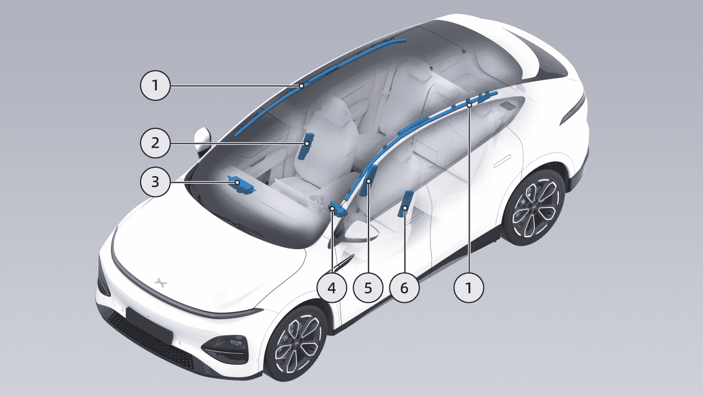
Viaje tranquilo
o se vuelve a encender después de apagarse o permanece encendido, indica una falla en el SRS. Comuníquese de inmediato con el Centro de Servicio XPENG para su mantenimiento.
• El vehículo golpea un bordillo u otros objetos salientes.
• El extremo delantero del vehículo golpea el suelo cuando el vehículo desciende una pendiente; o
Condiciones y situaciones para el despliegue
El SRS puede no desplegarse en las siguientes situaciones:
Que el SRS se despliegue no depende de la velocidad del vehículo cuando ocurre un accidente, sino que depende de la fuerza del impacto captada por el sensor de colisión cuando ocurre un accidente. Cuando la fuerza de impacto de una colisión es absorbida o dispersada por la carrocería, es posible que el SRS no se despliegue. Sin embargo, según las diferentes condiciones de impacto durante un accidente, el SRS también puede desplegarse en ocasiones. Por lo tanto, que el SRS se despliegue no depende del grado de daño del vehículo.
• El vehículo golpea una columna de hormigón, un árbol o cualquier otro objeto largo y delgado.
• El vehículo golpea la parte inferior trasera de un vehículo grande, como un camión.
• El vehículo sufre una colisión trasera con otro vehículo.
• El vehículo vuelca o se inclina hacia un costado.
• El vehículo golpea una pared u otro vehículo en posiciones distintas a la parte delantera.
El airbag desplegado y el cinturón de seguridad pueden brindar protección a los ocupantes, incluidos los conductores, para reducir el riesgo de lesiones.
El SRS puede desplegarse en las siguientes situaciones:
• La parte delantera del vehículo golpea el suelo al pasar sobre un surco profundo.
Viaje con tranquilidad
Impacto después del despliegue
• Después de un accidente, incluso si el SRS no se activa, el SRS y sus sistemas relacionados también pueden presentar una falla. Comuníquese con el Centro de Servicio XPENG para su mantenimiento.
En el momento del despliegue del SRS, se escuchará un sonido fuerte junto con la liberación de gas y polvo. Dicho polvo puede irritar la piel y los ojos. En ese momento, siempre que sea seguro, salga del vehículo lo antes posible. Si no es posible hacerlo, abra la ventana o la puerta e inhale aire fresco.
• El Centro de Servicio XPENG cuenta con herramientas especializadas, dispositivo OBD, información de reparación y técnicos profesionales calificados. La reparación y modificación del vehículo deben ser realizadas por el Centro de Servicio XPENG.
Si el polvo generado por el despliegue del SRS entra en los ojos o se adhiere a la piel, enjuague abundantemente con agua limpia lo antes posible. En caso de molestia grave, busque atención médica a tiempo.
• No utilice los componentes del SRS retirados de vehículos desguazados ni componentes del SRS reciclados.
Después de que el SRS se despliega, su volumen se reducirá para brindar un efecto de absorción de impactos progresivo al conductor y a los pasajeros, a fin de asegurar que la visión frontal del conductor no quede bloqueada.
• No coloque ningún objeto dentro del rango de inflado del SRS del asiento del conductor/pasajero delantero, para evitar obstaculizar el inflado del SRS en caso de colisión frontal.
• El pasajero delantero no debe sostener niños, mascotas u objetos en sus brazos ocupando el espacio de inflado del SRS. Esto es obligatorio tanto para adultos como para niños.
• El SRS solo puede activarse una vez. Comuníquese con el Centro de Servicio XPENG para el reemplazo del SRS activado y de cualquier componente del sistema afectado lo antes posible.
Advertencias, precauciones y limitaciones
• No fije ningún objeto (como un dispositivo de navegación portátil) al parabrisas delantero por encima del SRS del asiento del pasajero delantero.
Viaje con tranquilidad
• No cubra ni pegue ningún objeto (como un soporte para teléfono o adornos) sobre la superficie de identificación del volante o los componentes del SRS del lado del pasajero delantero, ni realice ninguna modificación en las piezas mencionadas.
• No cargue ni coloque ningún objeto por encima o cerca del SRS del asiento del conductor/pasajero delantero, en el costado del asiento delantero, por encima del techo en el costado del vehículo, ni en cualquier otra cubierta de airbag que pueda interferir con el despliegue del SRS. Estos artículos pueden causar lesiones graves cuando el SRS se despliega debido a una colisión violenta.
• No apile objetos sobre el asiento del acompañante. En caso de frenado de emergencia, una vez que el airbag se despliega, los objetos pueden salir despedidos y lesionar al conductor y a los pasajeros.
• No use fundas para los asientos. De lo contrario, el despliegue del SRS lateral de la primera fila se verá restringido en caso de accidente y también se reducirá la precisión de detección del sistema.
• No intente modificar los componentes, los circuitos ni el software del SRS. De lo contrario, el SRS podría no funcionar normalmente y no brindar la protección necesaria para el conductor y los pasajeros, o podría no desplegarse o desplegarse accidentalmente en caso de accidente, aumentando el riesgo de lesiones.
• No modifique la cubierta del airbag ni agregue piezas cerca de ella. Los pasajeros no deben apoyar la cabeza en las puertas. De lo contrario, cuando el airbag de cortina se despliega, podría causar lesiones.
• No se permite que los pasajeros coloquen los pies, las rodillas ni ninguna otra parte del cuerpo encima o cerca del SRS, para evitar obstruir el funcionamiento normal del SRS o causar fracturas u otras lesiones durante el despliegue del SRS.
Niños como pasajeros
Introducción
Para garantizar la seguridad de los niños, utilice asientos de seguridad para niños adecuados según su edad, peso y altura. Siga estrictamente las
Viaje tranquilo
instrucciones proporcionadas por el fabricante del asiento de seguridad para niños.
Etiqueta de uso del asiento de seguridad para niños
Niño mayor en el vehículo
Si los niños son demasiado grandes para usar asientos de seguridad para niños, pero demasiado pequeños para usar de forma segura los cinturones de seguridad estándar, se puede comprar y usar correctamente un cojín elevador para niños que cumpla con las regulaciones o normas pertinentes. El cojín elevador para niños puede usarse para elevar al niño, de modo que el cinturón de hombro del cinturón de seguridad cruce justo por el medio del hombro y el cinturón de seguridad baje hasta la entrepierna.
advertencia
No coloque un asiento para niños orientado hacia atrás en un asiento protegido por airbag, ya que esto podría causar la muerte o lesiones graves a un niño sentado en él.
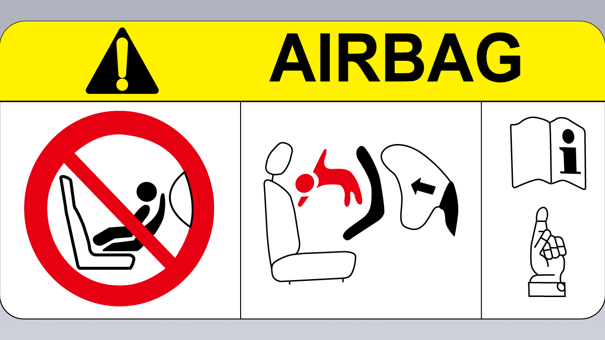
Viaje tranquilo
Desactivación del airbag del acompañante
- En la pantalla de control central, vaya a la interfaz “
→Conducción”, donde podrá deslizar hacia abajo y tocar el interruptor del airbag del acompañante.
• No coloque un asiento para niños orientado hacia atrás en el asiento con un airbag frontal activo. Puede ocurrir la muerte o lesiones graves al niño sentado en él.
advertencia
• Asegúrese de seleccionar un asiento de seguridad para niños adecuado para el niño según su edad, altura y peso.
1. Indicador de estado del airbag del acompañante
- Airbag del acompañante activado
• Un asiento para niños es solo para un niño. Nunca sujete a varios niños en un mismo asiento para niños con el cinturón de seguridad.
-
Airbag del acompañante desactivado
-
Interruptor del airbag del acompañante
El airbag del acompañante está activado de forma predeterminada y puede desactivarse/activarse de las dos maneras siguientes:
• Bajo ninguna circunstancia se debe llevar a un niño o bebé en brazos del ocupante durante la conducción.
• Nunca deje a un niño sin supervisión en el asiento para niños.
1. Toque el indicador de estado del airbag del acompañante en la barra de estado y luego vaya a la interfaz de configuración del interruptor.
• Nunca deje a los niños sin protección en un vehículo. Mantenga siempre a los niños en la

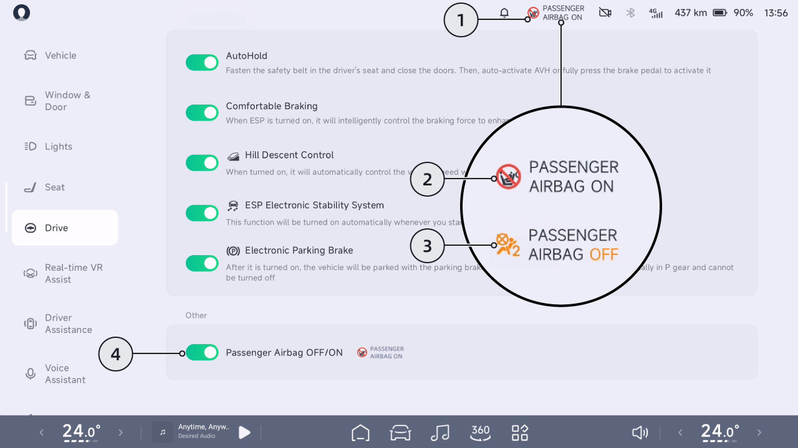
Viaje Tranquilizador
posición de asiento correcta durante la conducción. Nunca se pare en el vehículo ni se arrodille sobre el asiento. Si ocurre un accidente en estas circunstancias, podría ser fatal para los niños y para los demás.
• Todo asiento infantil que haya recibido fuerzas en un accidente debe ser reemplazado.
Tipos Recomendados de Asientos Infantiles* Tanto la norma ECE-R44 como la ECE-R129 se aplican a los asientos infantiles en el país donde se encuentra el usuario.
La clasificación ECE-R129 se basa en la estatura del niño.
Estatura del niño Fabricante Tipo Accesorio
40 cm-105 cm Dorel Europe Maxi-Cosi Pearl 360 & Base FamilyFix 360 ISOFIX+Pata de Apoyo
100 cm-150 cm Britax Romer Kidfix i-Size* ISOFIX+Cinturón
61 cm-105 cm HTS BeSafe iZi Kid X3 i-Size ISOFIX+Pata de Apoyo
*. Para la mejor protección, se recomienda usar este sistema de retención infantil con el respaldo incluido y asegurarse de pasar el cinturón de seguridad a través de Secure Guard y XP-pad.
La clasificación ECE-R44 se basa en el peso del niño.
Peso del niño Fabricante Tipo Accesorio
22 kg-36 kg Graco Booster Basic Cinturón
Viaje Tranquilizador
Solo se puede utilizar en el vehículo un asiento infantil que cumpla con la normativa.
Posición de asiento
posición de asiento delantero izquierdo delantero central
2ª fila derecha② con airbag del pasajero delantero activado
delantero derecho ①
2ª fila izquierda ②
2ª fila central②
con airbag del pasajero delantero desactivado
Posición de asiento apta para cinturón universal(sí /no)
Sí Solo orientado hacia adelante
No No
Sí Sí Sí Sí
Posición de asiento I-Size(sí /no)
No No No No Sí No Sí
Viaje Tranquilizador
Posición de asiento apta para fijación lateral(L1/ L2)
No No No No No No No
Fijación orientada hacia atrás más grande apta(R1/ R2X/R2/R 3)
R1/ R2X /R2 /R3
No No No No
No R1/R2X/R2/R
Fijación orientada hacia adelante más grande apta(F1/ F2X/F2/F 3)
F1/ F2X /F2 /F3
No No No No
No F1/F2X/F2/F3
Viaje Tranquilizador
Fijación de elevador más grande apta(B2/ B3)
No No (B2/B3) (B2/B3) B2/ B3
(B2/ B3)* B2/B3
• *Solo aplicable para instalación con cinturón de seguridad.
• Durante la instalación del SRI, el ángulo del respaldo de los asientos debe ajustarse adecuadamente para asegurar que el SRI permanezca estable.
• Durante la instalación del SRI, la altura del reposacabezas debe ajustarse adecuadamente o el reposacabezas debe retirarse para evitar interferencias con el SRI. No retire el reposacabezas cuando utilice un cojín elevador sin respaldo.
• ①: Al instalar un SRI en el asiento del pasajero delantero, ajuste el asiento del pasajero delantero lo más alto posible para instalar de forma segura el SRI.
• ②: Al instalar un SRI en el asiento de la 2ª fila, los asientos delanteros pueden ajustarse hacia adelante/atrás y en altura, y el ángulo del respaldo también puede ajustarse para asegurar que no haya interacción con el SRI/niño.
Viaje Tranquilizador
Instalación del Asiento de Seguridad Infantil
- Si el asiento de seguridad infantil tiene un anillo de fijación superior, sujételo al respaldo.
Asegure el asiento de seguridad para niños con el cinturón de seguridad
Instalación del asiento de seguridad para niños mediante anclaje ISOFIX
1. Coloque el asiento de seguridad para niños en el asiento exterior trasero del acompañante, luego tire del cinturón de seguridad hasta sacarlo por completo. Asegure y abroche el cinturón de seguridad según las instrucciones del fabricante del asiento de seguridad para niños.
Los puntos de anclaje ISOFIX están ubicados entre el respaldo y el cojín del asiento a ambos lados del asiento trasero, cada uno marcado con el logotipo ISOFIX en la parte superior.
- Deje que el cinturón de seguridad se retraiga, empuje firmemente el asiento de seguridad para niños contra el asiento del vehículo y, al mismo tiempo, tense el cinturón de seguridad que quedó flojo.
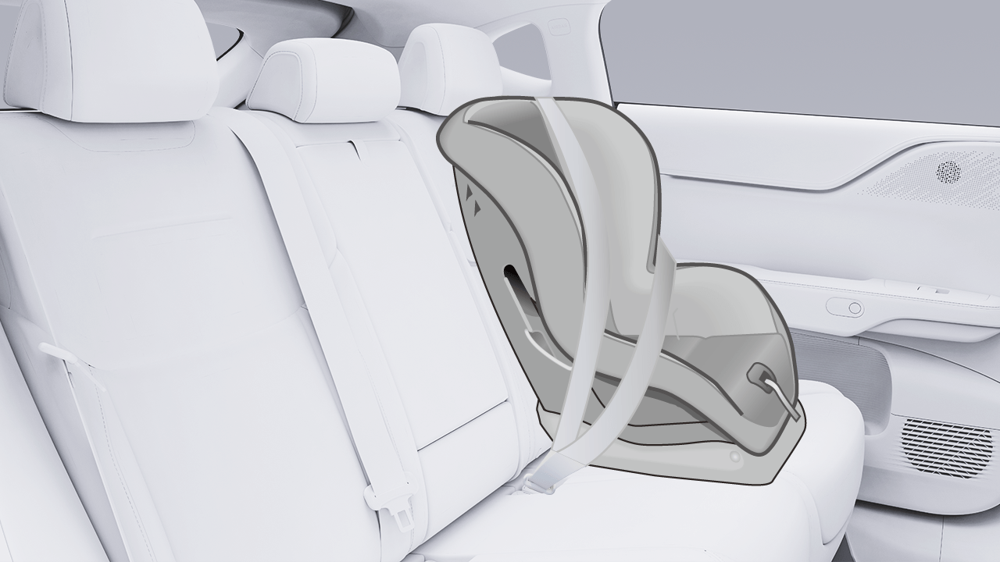
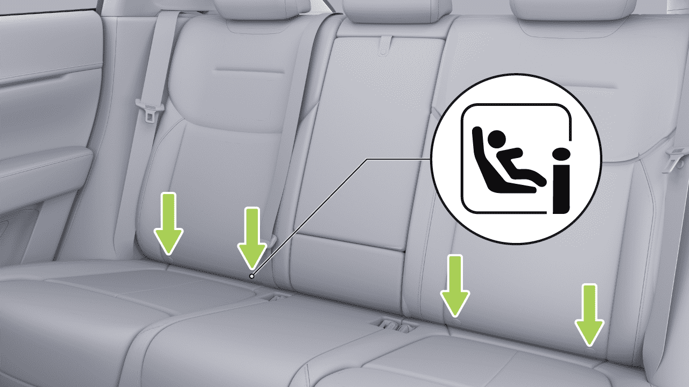
Viaje Tranquilo
Los puntos de anclaje superiores están ubicados detrás de los respaldos de los asientos traseros.
1. Coloque el asiento de seguridad para niños en el asiento exterior trasero del acompañante.
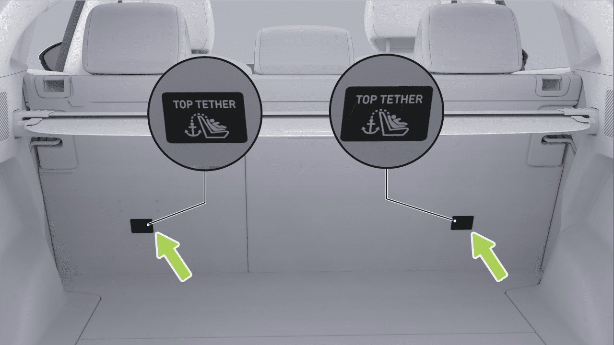
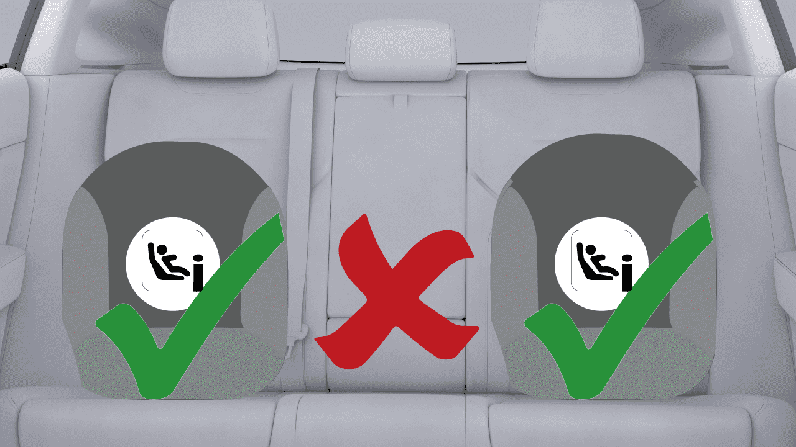
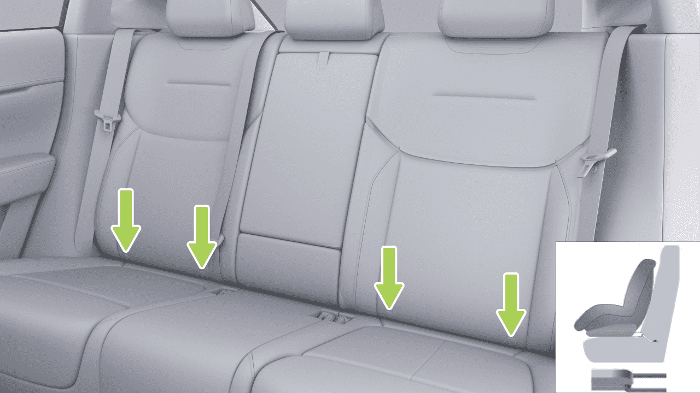
Viaje Tranquilo
- Inserte el soporte de fijación inferior del asiento de seguridad para niños en el anclaje ISOFIX según las instrucciones del fabricante.
1. Fije el asiento de seguridad para niños a lo largo del recorrido del cinturón de seguridad. Intente deslizar el asiento de seguridad para niños de un lado a otro y de adelante hacia atrás.
-
Si el asiento de seguridad para niños puede moverse más de 2,5 cm, el asiento de seguridad para niños está demasiado flojo. En ese caso, abroche el cinturón de seguridad o vuelva a conectar el asiento de seguridad para niños ISOFIX.
-
Si no se puede asegurar, pruebe otras posiciones del asiento o utilice otro asiento de seguridad para niños.
advertencia
• No coloque un asiento para niños orientado hacia atrás en un asiento protegido por airbag, ya que esto podría causar la muerte o lesiones graves al niño que se encuentre en el asiento.
- Pase el cinturón de fijación superior del asiento de seguridad para niños a través del reposacabezas y tírelo hacia la parte posterior del respaldo. Conecte el gancho y la presilla del cinturón de fijación al punto de anclaje, y tense el cinturón de fijación.
• Utilice siempre un asiento para niños adecuado para la edad, la altura y el peso del niño.
Verificación del asiento de seguridad para niños
• Un niño que pese más de 9 kg solo puede usar un asiento de seguridad para niños orientado hacia adelante si es capaz de viajar de forma autónoma. Los niños menores de dos años aún no han
Asegúrese de que el asiento de seguridad para niños no quede flojo después de la instalación:
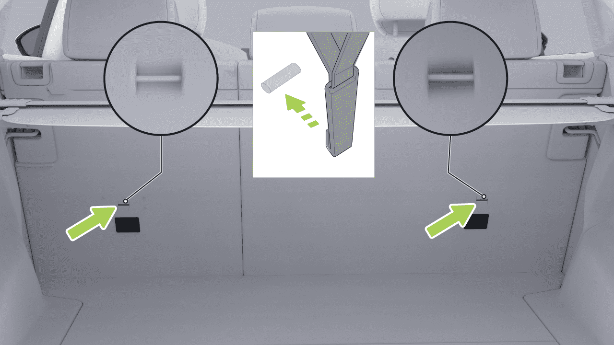
Viaje Tranquilo
desarrollado suficientemente la columna vertebral y el cuello, y evite daños por impacto frontal.
• Solo se puede acomodar a un niño en un asiento para niños. No utilice el cinturón de seguridad para sujetar a más de un niño en un asiento para niños.
• Bajo ninguna circunstancia se debe sostener a un niño o bebé en brazos dentro del vehículo, y todos los niños deben estar sujetos en un asiento de seguridad para niños adecuado en todo momento.
• No sujete los dos asientos de seguridad para niños a un mismo punto de anclaje. En caso de colisión, un solo punto de anclaje podría no ser suficiente para asegurar ambos asientos.
• No deje a un niño solo en el vehículo, incluso si el niño está sujeto al asiento para niños.
• Los puntos de anclaje del sistema de retención infantil solo se sujetan desde el sistema de retención infantil correctamente instalado. Bajo ninguna circunstancia debe utilizarse el sistema de retención infantil con cinturones de seguridad para adultos, arneses u otros elementos o equipos.
• No viaje sin protección de seguridad, mantenga al niño correctamente sentado durante la conducción y no permita que se ponga de pie en el vehículo ni se arrodille en el asiento. De lo contrario, podría producirse una lesión mortal para los niños y para otras personas en caso de accidente.
• Revise siempre el cinturón de seguridad y la correa de anclaje en busca de daños y desgaste.
• No utilice la correa de extensión del cinturón de seguridad en el cinturón empleado para montar un asiento infantil o un asiento elevador.
• Nunca utilice un asiento infantil modificado, dañado o que haya estado involucrado en un accidente de vehículo. Revise o reemplace el asiento infantil según lo especificado en las instrucciones del fabricante del asiento infantil.
• Asegúrese de que la cabeza del niño esté apoyada y de que el cinturón de seguridad del asiento infantil esté ajustado y asegurado adecuadamente cuando viaje un niño grande. El cinturón del hombro debe quedar alejado de la cara y el cuello, y la sección abdominal debe quedar alejada del abdomen.
• Para garantizar que los niños viajen de forma segura, siga siempre todas las instrucciones detalladas en este manual
Viaje Tranquilo
y las instrucciones proporcionadas por el fabricante del asiento de seguridad infantil.
Modo Bebé a Bordo
Los seguros de protección infantil están instalados en ambas puertas traseras del vehículo. Después de activar el seguro de protección infantil en el Modo Bebé a Bordo, la puerta correspondiente no puede abrirse mediante el interruptor de apertura eléctrico, lo que puede evitar que los niños abran la puerta trasera por error. También se puede habilitar el bloqueo de ventanas para bloquear el elevalunas de las ventanas del pasajero y reducir el riesgo de accidentes durante el viaje.
• En la pantalla de control central, vaya a la interfaz “ →Ventana y Puerta→Modo Bebé en el Auto”, donde podrá activar o desactivar el bloqueo de ventanas y el seguro de protección infantil.
• Los seguros de protección infantil pueden activarse/desactivarse a través del panel de accesos directos en la pantalla de control central.
Consejos
• Se recomienda activar el seguro de protección infantil cuando el niño esté sentado en la fila trasera.

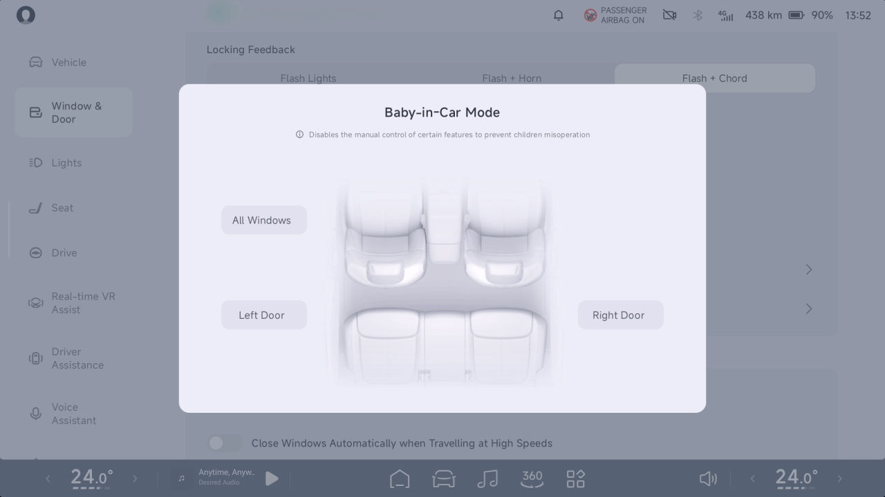
Viaje Tranquilo
• Para garantizar la seguridad cuando hay niños en el vehículo, bloquee la subida y bajada de las ventanas del pasajero para evitar que los niños operen las ventanas y se eviten atrapamientos.
Sonido Simulado a Baja Velocidad AVAS
Introducción
advertencia
Cuando el vehículo se desplaza a una velocidad inferior a 30 km/h, se emitirá un sonido análogo para alertar a los peatones y vehículos cercanos.
La puerta correspondiente no puede abrirse desde el interior cuando la función de seguro de protección infantil está activada; no deje a un niño solo en el vehículo.
Operación
Bloqueo por alcohol*
Introducción
Este vehículo cuenta con un puerto de bloqueo por alcohol para acomodar un dispositivo de bloqueo por alcohol con interfaz LIN (que cumple con la norma versión 50436-4 2022).
En el CID, vaya a la interfaz “ →Sonidos”, donde podrá seleccionar “Efecto de Sonido de Simulación de Sonido a Baja Velocidad”.

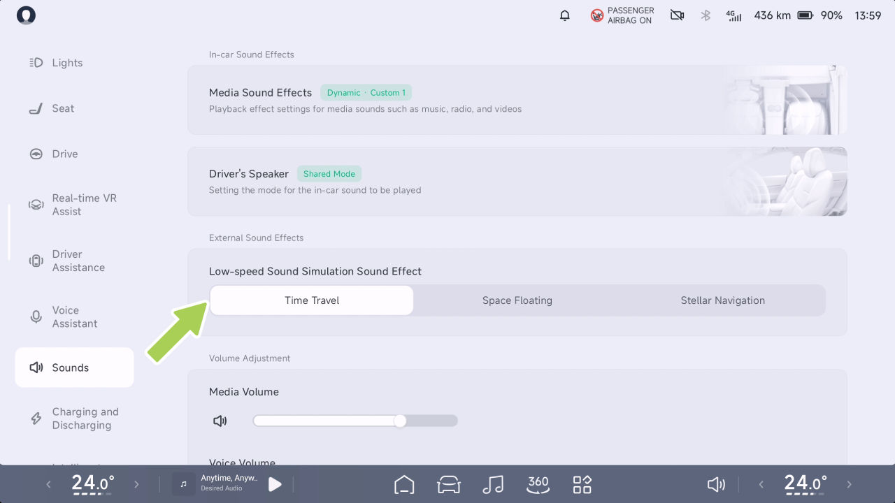
Viaje con tranquilidad
Sistema de Monitoreo de Presión de Neumáticos (TPMS)
Funcionamiento
Introducción
La presión de los neumáticos se calibrará automáticamente después de cada cambio de neumático. Antes de la calibración, mantenga el vehículo detenido durante más de 17 minutos. Durante la calibración, conduzca a una velocidad de más de 40 km/h durante 10 minutos y evite dar marcha atrás.
El TPMS puede monitorear la presión y la temperatura de los neumáticos en tiempo real cuando el vehículo está en marcha, y emite una alarma en caso de presión anormal de los neumáticos, temperatura anormal de los neumáticos o falla del sistema TPMS, para garantizar la seguridad de conducción.
Asistente de Frenado
advertencia
Introducción
• La luz de advertencia del sistema de monitoreo de presión de neumáticos del tablero de instrumentos se enciende cuando hay una presión anormal de los neumáticos o una falla del TPMS, y aparece un texto correspondiente para alertarlo: “Presión de neumáticos baja, Vuelva a inflar a tiempo”, “la presión de los neumáticos es demasiado baja, Rellene de inmediato”, “falla del sistema de monitoreo de presión de neumáticos, Contacte al Servicio”. Siga los recordatorios de texto.
El Programa Electrónico de Estabilidad utiliza sensores para identificar los estados de conducción del vehículo (por ejemplo, subviraje, sobreviraje o deslizamiento de las ruedas motrices), y puede aplicar una intervención de frenado dirigida o limitar el par motor para reducir eficazmente el riesgo de derrape o trompo y garantizar la estabilidad de conducción del vehículo.
Programa Electrónico de Estabilidad (ESP)
• Está prohibida la modificación privada del sistema de monitoreo de presión de neumáticos.
Apertura y cierre
Viaje con tranquilidad
Sistema Antibloqueo de Frenos (ABS)
El ABS evita que las ruedas se bloqueen cuando se aplica la fuerza máxima de frenado. En la mayoría de las condiciones de la carretera, el rendimiento del control de la dirección del vehículo puede mejorarse durante una parada de emergencia.
En caso de una parada de emergencia, el ABS monitorea continuamente la velocidad de cada rueda y ajusta la presión de frenado según la condición de bloqueo.
En la CID, vaya a la interfaz “ →Conducción”, y puede habilitar o deshabilitar el “Sistema Electrónico de Estabilidad ESP”.
Cuando el ABS se activa, puede sentir vibraciones en el pedal de freno. No necesita asustarse, simplemente conduzca de acuerdo con las condiciones de la carretera.
advertencia
En caso de una falla del ABS, la función básica de frenado permanece normal y no se ve afectada por la falla, pero la distancia de frenado aumentará.
• El ESP no previene accidentes causados por una conducción peligrosa o por giros de emergencia a alta velocidad.
• Si el ESP falla, contacte de inmediato al Centro de Servicio de Automóviles XPENG para su reparación.
El conductor siempre debe mantener una distancia segura respecto al vehículo de adelante y estar atento a condiciones de conducción peligrosas. Aunque el ABS puede mejorar la distancia de frenado, no
advertencia

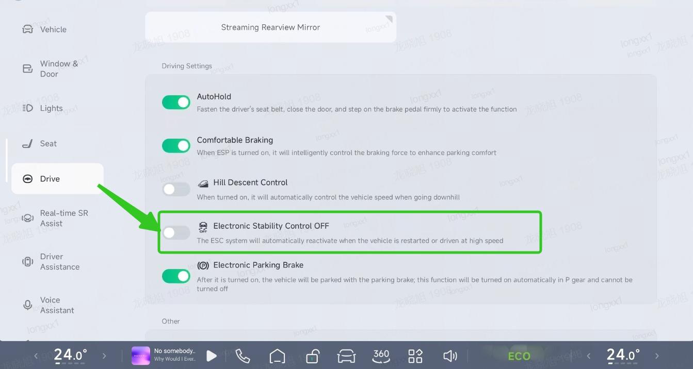
Viaje con tranquilidad
va más allá de las leyes de la física, ni previene el peligro de deslizamiento de los neumáticos (por ejemplo, cuando hay una capa de agua entre la carretera y el neumático que impide que el neumático entre en contacto directo con la carretera).
Sistema de Distribución Electrónica de Frenado (EBD)
deslizamiento, garantizando al mismo tiempo un par motriz suficiente para ayudar al vehículo a salir; controle la profundidad del pedal del acelerador para evitar que esté completamente pisado en todo momento.
Sistema de Distribución Electrónica de Frenado (EBD)
En caso de emergencia, pise a fondo el pedal del freno y mantenga una presión constante. El ABS ajusta la presión de frenado en cada rueda según la fuerza de frenado disponible para evitar el bloqueo de las ruedas y garantizar una parada segura.
Parada de emergencia
El EBD forma parte del ABS. Cuando el vehículo frena con normalidad, el EBD puede equilibrar la distribución de la fuerza de frenado entre las ruedas delanteras y traseras según la carga del vehículo.
El EBD puede distribuir correctamente la fuerza de frenado generada por el sistema de frenos a las cuatro ruedas según la tracción entre las ruedas y la superficie de la carretera. Esto garantiza la máxima eficiencia de frenado, acorta significativamente la distancia de frenado, mantiene el vehículo estable durante el frenado y mejora la seguridad de conducción.
Sistema de Control de Tracción (TCS)
Cuando el vehículo arranca o acelera rápidamente sobre una superficie resbaladiza como hielo y nieve, las ruedas motrices patinarán. El dTCS controla la presión de frenado y la salida de par del vehículo para minimizar el patinaje de las ruedas.
Consejos
Sistema de Asistencia al Frenado (EBA)
Cuando el vehículo se encuentra en una situación en la que puede quedar atrapado (p. ej., en barro o nieve profunda), la función dTCS puede controlar el deslizamiento de las ruedas
En caso de emergencia, pise rápidamente y mantenga pisado el pedal del freno. El EBA generará una presión de frenado mayor que la del frenado normal,
Viaje tranquilo
de modo que el sistema de frenos pueda producir la presión requerida para la máxima desaceleración en el menor tiempo posible, obteniendo así la distancia de frenado más corta.
• El HHC dura aproximadamente 2 s y el tiempo de retención del freno se libera antes según el conductor y la pendiente.
Control de Retención en Pendiente (HHC)
El HHC es capaz de proporcionar asistencia de frenado, pero sin exceder las reglas de la cinemática y, por razones de seguridad, el conductor debe, según el vehículo, accionar los frenos de manera oportuna para evitar un accidente cuando el vehículo está descendiendo por una pendiente.
advertencia
Cuando el vehículo se detiene y arranca en una pendiente con una inclinación superior al 5%, durante el período en que el conductor suelta el pedal del freno para pisar el pedal del acelerador, la salida de potencia no es suficiente para arrancar el vehículo. Antes de avanzar (el vehículo tiende a deslizarse), el HHC mantendrá la fuerza de frenado requerida por el conductor para detener el vehículo y mantenerlo en estado estático, para evitar que el vehículo se deslice.
Frenado Multicolisión (MCB)
En caso de colisión del vehículo, el MCB puede frenar activamente para reducir la probabilidad de una colisión secundaria.
Consejos
• El HHC solo se aplica cuando: el vehículo está en D o R, se pisa el pedal del freno y la cantidad de fuerza de frenado producida antes de soltar el pedal del freno es suficiente para mantener el vehículo en una pendiente.
Control de Descenso en Pendiente (HDC)
Introducción
El HDC es una función de control de crucero que puede ayudar al conductor a circular cuesta abajo a velocidad constante y aliviar la fatiga del pie causada por
Viaje Tranquilo
pisar el pedal de freno todo el tiempo al circular cuesta abajo.
se desactiva, y el conductor debe tomar el control del vehículo. Cuando la velocidad del vehículo supera los 60 km/h, la función se desactivará por completo y no se volverá a activar.
Funcionamiento
Activar o desactivar en el CID
Consejos
• El HDC puede operarse en pendientes del 5% o más.
• El HDC se activa: velocidad del vehículo inferior a 35 km/h; la temperatura del disco de freno es normal. El sistema ESP está en buen estado.
El HDC puede mantener activamente la velocidad del vehículo baja, pero no más allá de la dinámica, y por razones de seguridad, el conductor debe seguir las condiciones reales del vehículo. Accione los frenos a tiempo para evitar un accidente cuando el vehículo baje la pendiente demasiado rápido.
advertencia
En el CID, vaya a la interfaz “ →Conducción”, y puede activar o desactivar el “Control de Descenso en Pendientes”.
La función HDC puede usarse cuando la velocidad del vehículo está entre 8 km/h y 35 km/h. Si pisa el pedal de freno o el pedal del acelerador durante el funcionamiento del HDC, la función HDC se

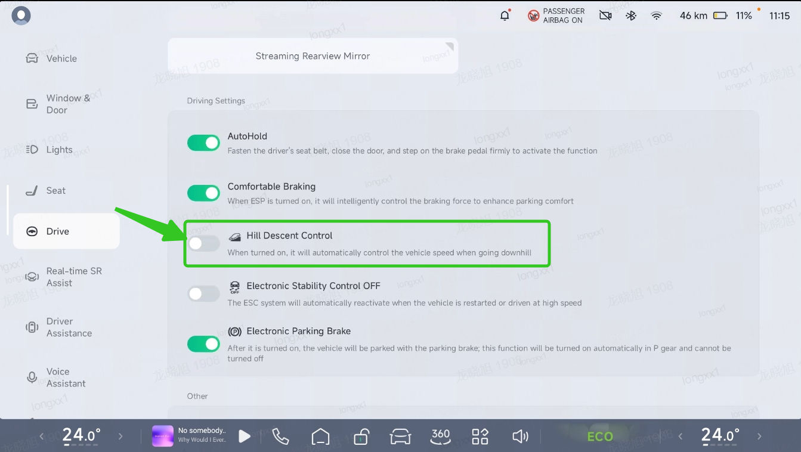